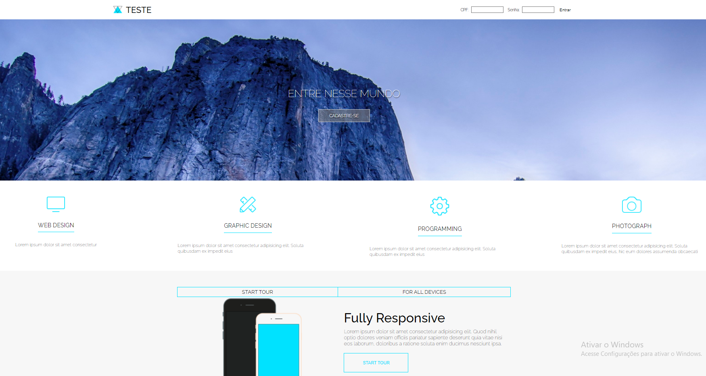

Esses são alguns dos projetos que criei
Projeto Live
Este projeto foi criado usando HTML5 e CSS, e para a conclusão deste projeto será necessário o uso de Node.js ou PHP.

Este projeto foi criado usando HTML5 e CSS, e para a conclusão deste projeto será necessário o uso de Node.js ou PHP.